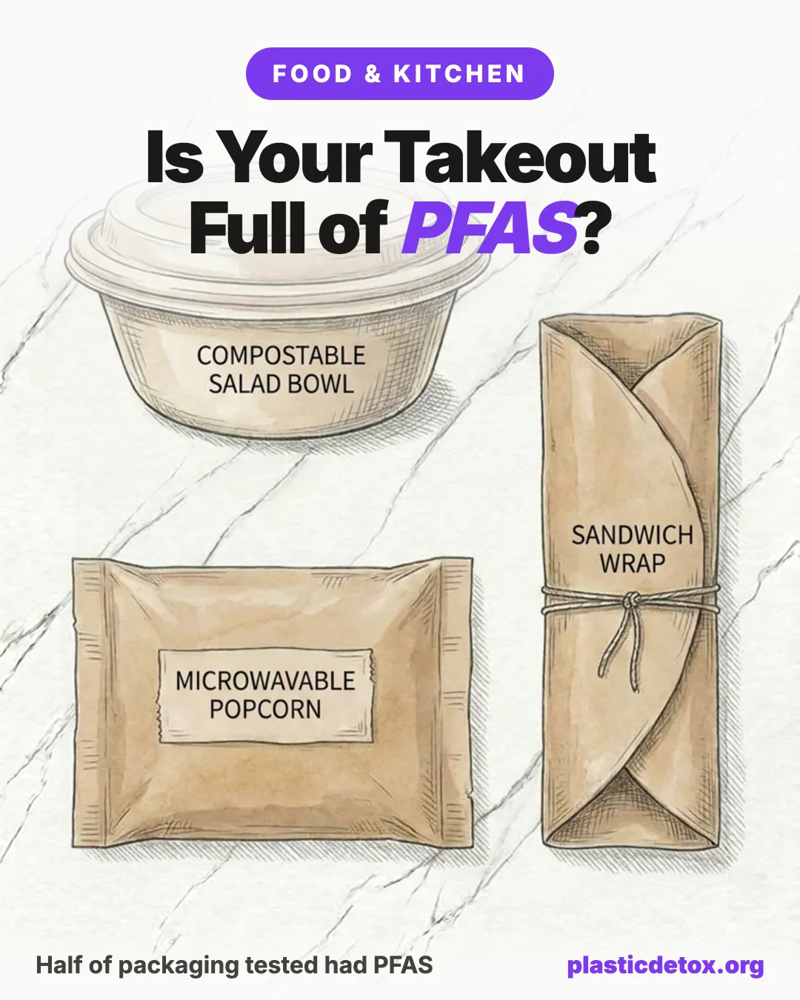

PFAS in Fast Food and Takeout Packaging: What the Testing Found (2026)

The reason a burger wrapper does not turn to mush and a fry bag does not soak through is usually a coating of PFAS, the forever chemicals. That same slick barrier sits on the compostable salad bowl, the microwave popcorn bag, and the pastry sleeve, and heat and grease pull it straight into your food.
The 30 Second Summary
- Grease proofing is the whole point. PFAS were added on purpose to keep hot, oily food from soaking through wrappers, fry bags, molded fiber bowls, and popcorn bags.
- Testing found it almost everywhere. When Consumer Reports tested 118 packaging products in 2022, more than half had measurable organic fluorine, the marker for total PFAS. A 2017 study found fluorine in 46 percent of food contact papers.
- The good news, with a catch. As of 2024 the FDA says PFAS grease proofers are no longer sold for US food packaging. It was a voluntary phase out, not a ban, so old stock, imported packaging, and recycled fiber can still test positive.
- "Compostable" is not the same as PFAS free. The beige molded fiber bowls were long treated too, even the ones marketed as green.
- The fix is a habit, not a purchase. Move hot food out of its wrapper fast, never microwave the packaging, skip microwave popcorn bags, and carry a stainless container for leftovers.
- For leftovers on the go: a stainless to go container
- To empty takeout at home: glass containers with glass lids
- Instead of popcorn bags: a stainless stovetop popper and plain kernels
1. What the Testing Actually Found
Two waves of independent testing turned takeout packaging from an afterthought into a headline.
The Consumer Reports numbers are the ones worth remembering. Of the 118 products, 37 came in above 20 ppm of organic fluorine and 22 topped 100 ppm. A paper side bag was the single highest at 876 ppm. Bags for fries, cookies, and chicken pieces from household name chains landed in the low hundreds. The point is not any one villain brand. It is that a barrier chemistry meant to fight grease was quietly standard across the whole aisle.
2. Why Takeout Packaging Has PFAS in It
PFAS is not a contaminant that fell into the wrapper by accident. It was engineered in. Fiber based packaging is basically paper, and paper hates hot grease, so a thin fluorinated coating gives it a slick, waterproof, oil proof shield. On molded fiber bowls, the beige compostable kind, the PFAS was often blended into the pulp itself while the bowl was formed, which is why you cannot simply peel it off.
Heat and fat are what pull the chemistry off the paper and into the meal. A dry cold sandwich in a wrapper transfers far less than a pile of hot fries steaming in a coated bag, or popcorn cooking against the bag wall in a microwave. That is why the habits at the end of this article matter as much as the packaging itself.
3. What PFAS Does in the Body
PFAS earned the forever chemicals nickname because the carbon to fluorine bond barely breaks down, in the environment or in you. It builds up over years. Federal health agencies, drawing on human studies, connect certain PFAS to a specific set of effects.
- Higher cholesterol, one of the most consistent findings across studies.
- A weaker immune response, including a dampened antibody reaction to vaccines.
- Thyroid changes and shifts in liver enzymes.
- Kidney and testicular cancer, linked most strongly to PFOA.
- Pregnancy risks, including pregnancy induced high blood pressure and preeclampsia, plus small reductions in birth weight.
To be fair to the science, these are associations from population studies, not proof that your fry bag caused any one outcome. But food packaging is a daily, avoidable route, and closing avoidable routes is exactly how you lower a body burden that never clears on its own. If you are pregnant or feeding little ones, our guides on microplastics and fertility and microplastics in baby food go deeper.
4. The 2024 Phase Out, and Why It Is Not Case Closed
Here is the genuinely good news. In February 2024 the FDA announced that grease proofing agents made with PFAS are no longer sold for food contact use in the United States. It was the result of a voluntary phase out by the handful of manufacturers that made them, and the agency described it as the end of the primary source of dietary PFAS from authorized food packaging. Several states, including California, New York, Washington, Colorado, and Maine, had already passed their own bans on intentionally added PFAS in fiber packaging, effective across 2023 to 2026.
So why keep reading? Because a phase out is not a clean off switch.
On top of those gaps, the state bans target PFAS that is intentionally added, so trace contamination can still register as total organic fluorine, which is exactly what tripped up the "phasing it out" brands in the 2022 testing. The direction of travel is genuinely encouraging, and packaging made fresh in 2025 and later is far more likely to be clean. But "the FDA handled it" is not a reason to microwave a popcorn bag tonight.
5. The Items Still Worth Avoiding
If you only change a few things, change these. They are the highest heat, highest grease, highest contact items, the ones where a coating has the most reason to exist and the most chance to migrate.
| Item | Why It Ranks High | The Move |
|---|---|---|
| Microwave popcorn bags | Coated bag heated to popping temperature against the food | Loose kernels on the stove or an air popper |
| Molded fiber bowls | PFAS built into the pulp, holds hot oily grain bowls | Eat in on a plate, or bring your own |
| Fry bags & sleeves | Hot, greasy, steaming, long dwell time | Tip fries onto a plate, do not eat from the bag |
| Burger & sandwich wrappers | Warm and greasy, held right against the food | Unwrap fully, set food on a plate |
| Any packaging in the microwave | Heat sharply increases chemical migration | Transfer to glass first, every time |
6. The Swaps That Close the Gap
You do not need to give up takeout. You need a couple of containers within reach so the food spends as little time as possible against a coated surface. Everything below is stainless or glass, so there is nothing to leach in the first place. We found no recalls on any of these picks.

EcoEvo Glass Containers, Glass Lids
Four 35 oz borosilicate glass bases with matching glass lids, silicone gasket seal, airtight and leakproof. Nothing but glass touches the food. The set to keep by the door so takeout leaves its wrapper the moment you get home.
View →
Caperci 25 oz Stainless Containers
Three 720 ml 18/8 stainless bases with silicone sealed leakproof lids, BPA free. Packs flat in a bag so you can hand one over for leftovers instead of taking a coated box.
View →
Urban Green Glass Containers, Glass Lids
Three borosilicate glass bases with silicone framed glass lids, 100 percent plastic free. Airtight, leakproof, and microwave safe with the vent open, so you can reheat in the same dish the food is stored in. Our storage top pick.
View →
LunchBots 12 oz Insulated Food Jar
18/8 stainless vacuum jar with a vented lid, 12 oz. Keeps soup and grain bowls hot for hours, so the hottest, greasiest orders never touch a molded fiber bowl at all.
View →The popcorn fix is its own thing. Microwave popcorn bags are one of the most heavily coated items in the whole category, and they cook at the exact temperature that drives migration. Swap them for loose kernels in an all stainless stovetop popper, using plain organic kernels. Skip the plastic bodied electric air poppers, since popcorn pops at exactly the temperature you do not want touching plastic. It costs pennies a bowl and tastes better.
7. Beyond the Wrapper
Takeout packaging is one route in. If you are closing it, these are the neighboring ones worth a look.
- Water: PFAS is in a lot of tap water, and a good filter closes the single biggest household source. See how to filter PFAS and microplastics from water.
- Cookware: nonstick pans are a PFAS story too. Compare the safer options in cast iron vs stainless vs ceramic.
- Food storage: the containers you keep leftovers in matter as much as the ones you carry. Here are the best plastic free food storage containers.
- Greenwashing: "compostable" and "eco" claims do a lot of quiet work. More traps in clean products that are not so clean.
8. Frequently Asked Questions
Does fast food packaging contain PFAS?
Historically much of it did. PFAS were added to wrappers, fry bags, molded fiber bowls, and microwave popcorn bags to keep grease and moisture from soaking through. When Consumer Reports tested 118 food packaging products in 2022, more than half had measurable organic fluorine, a marker for total PFAS. As of 2024 the grease proofing agents were phased out of the US market, but older stock, imported packaging, and recycled fiber can still test positive.
Did the FDA ban PFAS in food packaging?
Not with a formal ban. In February 2024 the FDA announced that grease proofing agents made with PFAS are no longer sold for food contact use in the US, the result of a voluntary phase out by the manufacturers. The agency called it the end of the primary source of dietary PFAS from authorized food packaging. Because it was a market exit rather than a statutory ban, treated paper already in the supply chain could take until around mid 2025 to work through, and imported packaging is not covered.
Are compostable takeout bowls PFAS free?
Not automatically. Molded fiber bowls, the beige compostable bowls used for salads and grain bowls, were long treated with PFAS during the pulp forming stage to hold up to oily food. Testing of bowls from chains including Chipotle and Sweetgreen found elevated fluorine even on packaging marketed as compostable. Newer bowls made after the 2024 phase out are far more likely to be clean, but compostable does not by itself mean PFAS free.
How can I reduce PFAS exposure from takeout?
Move hot, greasy food out of its wrapper or bag and onto a plate as soon as you can, because heat and grease drive more chemical migration. Never microwave food in its packaging, and skip microwave popcorn bags in favor of loose kernels on the stove. Bring your own stainless or glass container for leftovers, decline molded fiber bowls when you can, and eat in on real dishware when that is an option.
What are the health effects of PFAS?
PFAS are called forever chemicals because they build up in the body and the environment. Federal health agencies link certain PFAS to higher cholesterol, a weaker antibody response to vaccines, thyroid changes, kidney and testicular cancer, pregnancy induced high blood pressure and preeclampsia, and small reductions in birth weight. These are associations from human studies, and a daily route like food packaging is one worth closing where you can.
Related Articles
- How to Filter PFAS and Microplastics from Water
PFAS is in tap water too. Which filters actually remove it. - Best Plastic Free Food Storage Containers
The glass and stainless containers to keep leftovers in. - Cast Iron vs Stainless vs Ceramic Cookware
Nonstick is a PFAS story too. The safer pans to cook on. - Best PFAS Free Dental Floss
The "glide" coating on most floss is Teflon. The clean swaps.